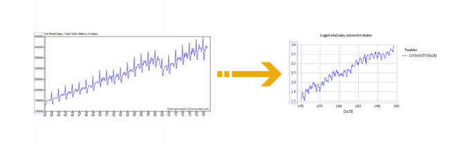

What is a Logarithmic Transformation?
Logarithmic transformations allow datasets to become more readable and useful.
What is the Business Challenge?
Many times, a dataset contains information that with no adjustment fails to provide accurate information under statistical analysis. Transformations are just one adjustment used to make data more fit for statistical analysis (Reducing skewness, creating linear relationships, etc .)
What is a Logarithmic Transformation?
A logarithmic transformation is a transformation where every data-value (x) is re-calculated in a logarithmic form (log(x), or more aptly, ln(x)). Logarithms have a lot of unique properties, such as turning multiplicative operations into addition.

This aspect of logarithms is so important, as it allows exponential data to be viewed linearly. Linear models will hence provide much more accurate results, thereby improving a model’s reliability. An example of an exponential to linear transformation can be seen below. Notice the change in scale on the y-axis.

How will Ready Signal Help?
Ready Signal allows you to change your signal to automatically apply a logarithmic transformation to your data. With one click of a button, a signal can be automatically calculating and incorporating log transforms into the data stream.
References
Nau, Robert. “The Logarithm Transformation.” Uses of the Logarithm Transformation in Regression and Forecasting, Fuqua School of Business, people.duke.edu/~rnau/411log.html.
Cox, Nicholas J. Fmwww.bc.edu, Durham University, 25 July 2007, fmwww.bc.edu/repec/bocode/t/transint.html.